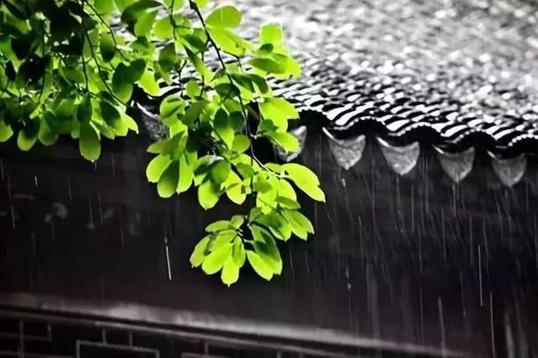

秋雨缠缠绵绵，丰润着我那支细细的笔。我慢慢写着、画着，小心翼翼。
秋风凉爽了眉梢，不再烦燥的滴着汗滴；秋雨温柔的落在湖里，不见了小鱼张着圆圆的小嘴，贴着水面呼吸，鱼儿悠闲的啣着水珠，翔游浅底；柳枝愜意的荡来荡去，撩拨着南飞雁那丰满的羽翅。
我用饱蘸秋雨的笔，笨拙的画着。墨绿色的叶，似乎被秋施了魔法般，不经意间变成了浅绿、金黄，层叠成趣。
在那一片金光映照下，一簇簇枫叶炫着鲜红的色彩，如火、如血，娇艳欲滴，格外亮丽，在兰天白云下，燃烧着诗意。
秋，是个浪漫的季节。
有人怜惜百花的凋零，有人悲叹落叶的低吟。
然而我却对秋情有独钟，因为秋沉淀了岁月的行囊，秋缤纷了万物的性格，秋收获了春夏的结局。
秋雨如墨，笔所触及，酣畅淋漓；
秋雨似酒，临窗相依，闻之甘饴。
秋，是个多情的季节。
雨也缠缠，风也绵绵，花也留连，草也牵绊。
秋话在笔下，秋恋在心间。